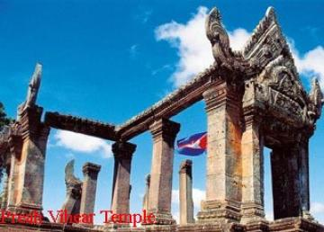

- Siem Reap
- Pailin
- Battambang
- Pursat
- Banteay Meanchey
- Oddar Meanchey
- Preah Vihear
- Kampong Thom
- Kampong Chhnang
- Kampongcham
- Stung Treng
- Ratanakiri
- Mondulkiri
- Kratie
- Tbongkhmum
- Preyveng
- Svay Rieng
- Kandal
- Phnom Penh
- Takeo
- Kampong Speu
- Kampot
- Kep
- Preah Sihanouk
- koh kong


Preah Vihear Travel Guides
General Information
Preah Vihear is quite a big northern province of Cambodia. Its capital is called Phnom Tbeng Meanchey. The province itself is named after the temple of Prasat Preah Vihear, what is definitely the hotspot of this province. Much of the province is extremely remote and strongly forested. Unfortunately do large logging companies reduce the natural landscape by carving huge tracts of pristine tropical hardwoods out of the locations. It is also one of the least populated provinces in the Kingdom of Cambodia. This tranquil site is popular for the Preah Vihear temple, standing in the vicinity of the borderline between Thailand and Cambodia.
The province has one of the worst infrastructures in the country there are even no proper Major Roads in existence. Going around this province is not that easy if you're used to proper roads and usual transportation possibilities, as there are only a few pick-ups or some money-hunting moto drivers to take you where you would like to go.
Whatsoever the province has a lot to offer for those, who are interested in ancient temple structures and remote villages without touristy influence. Here in Preah Vihear you may find three of the most impressive legacies from the Angkorian era: the mountain temple of Prasat Preah Vihear, the 10th-century capital of Koh Ker and the mighty Preak Khan.
Koh Ker is nowadays easily accessible from Siem Reap via Beng Mealea, but the other two still remain difficult to visit, requiring long and tough overland journeys and a distinct possibility to spend a night in the jungle. During the wet season these places are more or less unreachable. But there are governmental plans to develop the region for a smooth but constant tourism, building roads and improving infrastructure.
The provincial capital Tbeng Meanchey is due to the state of the infrastructure and it's geographical location not visited by a lot of foreigners. Most of them don't make it here worrying about the street conditions and the backcountry feeling of no fast supply in need. The city is sprawling and dusty and consists of little more than two small major dirt roads form South to North. There is nothing interesting in town or to do, so it has necessarily become more a stopover on the way to Koh Ker and Preah Khan.
Geography
Preah Vihear province is 13,788 square kilometres big. It's located in the North of the country and shares its international border to the North with Thailand and Laos, its provincial borders to the East with Stueng Treng, to the West with Oddar Meanchey and Siem Reap and to the South with Kompong Thom. The province is blessed with endless natural treasure. With its acres of dense, hilly forests and scrub green vegetation, Preah Vihear is indeed an ideal getaway destination in the lap of nature. The breathtaking views over the Dangkrek Mountains and lush jungle from Preah Vihear temples are famous.
Population
The current population in this province is about 160,551 people or 1.1% of the country's total population (14,363,519 person in Cambodia, 2007, provincial government data), with 81,318 male and 78,233 female. The population density is therefore 11.64 people per square kilom
Climate
The country has a tropical climate - warm and humid. In the monsoon season, abundant rain allows for the cultivation of a wide variety of crops. This year-round tropical climate makes Cambodia ideal for developing tourism. Travellers need not to fear natural disasters such as erupting volcanoes or earthquakes, and the country is not directly affected by tropical storm
Climate: Cambodia can be visited throughout the year. However, those plans to travel extensively by road should be avoided the last two months of the rainy season when some countryside roads may be impassable. The average temperature is about 27 degrees Celsius; the minimum temperature is about 16 degrees. December and January are the coolest months, whereas the hottest is April.
General information about the provincial climate:
- Cool season: November- March (22-28c)
- Hot season: March- May (27c -35c)
- Rainy season: May - October (24-32c, with humidity up to 90%.)
Economy
The province's economy is 85% based on farming and the remaining other 15% are based on fishing and illegal trading with pristine hardwoods. Because of its border with Thailand, the international trade is also increasing slightly and becoming another important sector of the province's economy. There is several developing plans from province based NGO's, the Ministry of Foreign Affairs from Thailand and Cambodian government itself. The economy and infrastructure of the province was also sustainably destructed during the Khmer Rouge stand and needs therefore a whole new stabile backbone.